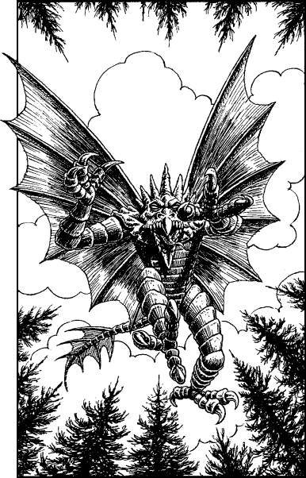

200
You lead the regiment along the trail to where the surrounding forest opens out into a shallow meadow. Along the centre of this grassy clearing there meanders a small stream, where a dozen of the winged creatures are spread unevenly along the muddy banks. They are staring intently at the water, seemingly fascinated by the sight of the trout swimming there, and at first they do not see the regiment approaching. You give the signal to change formation, to form into two lines abreast for the charge. Then you glance at the wooded rise on the far side of the meadow, knowing that beyond this ridge lies your goal—the Kai Monastery.
Suddenly one of the creatures hovering over the stream raises the alarm and his ghastly brothers growl with surprise. Unnervingly, they clack their beaked jaws as they survey the King’s Cavalry, as if they are relishing the thought of an imminent feast. You order the men to lower their lances and then, with a smile of grim determination on your lips, you spur your horse forward and give voice to your battle-cry: ‘For Sommerlund and the Kai!’
The King’s Cavalry sweep down the meadow and engulf the winged horrors, driving their lances through their steely hides. You see two of the creatures disappear beneath a thundering wave of hooves, and another two are caught from behind as they attempt to take to the air. You strike one creature a blow to its head as you gallop across the stream. It glances off its iron-hard skull, but the force is sufficient to stun the beast. As it staggers drunkenly in your wake, Captain D’Val, who is leading the second line, veers towards it and runs it through with his lance.
Once you are over the stream, you spur your horse up the grassy rise towards the top of the ridge, now no more than a hundred yards distant. You are within seconds of reaching the crest of the ridge when suddenly one of the creatures comes swooping out of the sky. It fixes you with its glowing eyes and extends its talons as it comes screaming down towards your face.

If you possess Kai-alchemy and wish to use it, turn to 129.
If you possess Magi-magic and wish to use it, turn to 37.
If you possess neither of these skills, or if you choose not to use them, turn to 303.